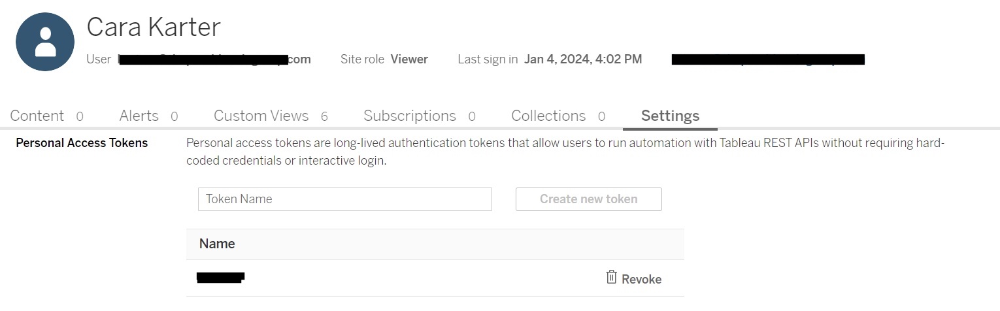

Tableau API with R
Automating Exports from Tableau using R and the Tableau API
This document outlines the procedure that an active, approved user of a Tableau application can use to
automate the export of workbook data from Tableau using methods available through the existing Tableau
API. The API allows users to access the same information that they have permissions to access through
the Tableau user interface. This makes it possible to streamline the export of data without needing to
log in and navigate to the Tableau site each time, but it does not provide any additional data access
not already available to a user.
Step 1: Set Up your Tableau Account for API access
The first step in using the Tableau API to interact with a Tableau site is to generate a Personal
Access Token.
1. Navigate to and login to Tableau.
2. Once logged into the Tableau site, click on your initials icon in the upper right corner and then
on "My Account Settings" in the drop-down menu.
3. On the main Account Settings menu, scroll down to the last sub-section under Security, labelled
"Personal Access Tokens".
4. Type a Token Name in the text box and click "Create new token". This will generate a Token Name and
Token Secret for you.
5. Save your Token Name and Token Secret in a secure location similar to how you would treat your
login information or other credentials. You will not be able to access your Token Secret after you
close the pop-up window.

You will need this token to interact with the Tableau site through the API.
Personal Access Tokens expire (By default, after 15 days of inactivity or after 1 year if used more
frequently. They can also be revoked by the system admin), so you will periodically need to regenerate
this by logging back in and repeating these steps.
Step 2: Create a script in R (or another scripting language) to interact with the Tableau
API
After obtaining a Personal Access Token through your Tableau account, you can begin writing your
script to make Tableau API calls. The remainder of these steps will include examples using R scripts,
but other languages are supported by the Tableau API. Reference the documentation for further
information.
Your script will require you to pipe in your Personal Access Token. If you collaborate on scripts or
save a script in a shared directory you should not include your token directly in the script, remember
this information should be treated like any other secure credential. To secure my token, I added it to
a separate R file (‘Secrets.R’), saved only on my local computer and included in my gitignore file.
For convenience, in my Secrets file I saved the entire body for the initial sign in API call rather
than just the token name and secret (the entire code snippet, below). Your initial request body should
look similar to the below, with the TOKENNAME and TOKENSECRET replaced with your token information.
You will also need to include the site contentURL here. Usually a Tableau site url looks like this:
"https://prod-useast-b.online.tableau.com/#/site/themonstermash/" with the highlighted portion being the site contentURL.
json_body <- '
{
"credentials": {
"personalAccessTokenName": "TOKENNAME",
"personalAccessTokenSecret": "TOKENSECRET",
"site": {
"contentUrl": "themonstermash"
}
}
}'
Other than that information in my Secrets file, the rest of the procedure for pulling down data from the API is included in the example R file provided at the end of this post. I’ll walk through it in sections now.
Install and Load required R packages:
## Install required packages
# install.packages("httr")
# install.packages("jsonlite")
# install.packages("readr")
# install.packages("openxlsx")
## Load required packages
library(httr)
library(jsonlite)
library(readr)
# library(openxlsx)
Load your secrets file as a source for the sign in call. As mentioned above, you should not directly include your Personal Access Token credentials in the script if you are sharing it, so you’ll need to load in those variables (or the entire body of the call if you are following me exactly). You can do this by feeding your secrets file path to the source() function.
# Load in the file where you saved your PAT info from Tableau
source("C:\\Users\\karterc\\Documents\\R\\Secrets.R")
Make the sign in call. Now you need to sign into the Tableau Server using your API token. This call will supply a response that you will need to parse in the next step.
## Sign in to access the API using your generated Personal Access Token
url <- "https://prod-useast-b.online.tableau.com/api/3.19/auth/signin"
requestbody <- json_body # This is from the Secrets file
response <- httr::POST(url, body = requestbody, content_type_json(), accept_json())
response_content <- content(response, "parsed")
Obtain your temporary token and the site_id value from the sign in response content. Parse the sign in response content and save the token and site_id into new variables that you will use in subsequent API calls. Just like your Personal Access Token, this token aligns with your existing user permissions on Tableau. If you cannot access something through the online user interface, you will not be able to access it through the API.
## Extract the token for future API calls (e.g. X-Tableau-Auth: TOKEN)
token <- response_content$credentials$token
## Extract the site id for future API calls
site_id <- response_content$credentials$site$id
Use the Query Views method to obtain a list of site views that you can interact with through the API. The Tableau API Query Views method returns all the views that you have read permission to access.
## Get a list of all your views to find the one of interest from /api/api-version/sites/site-id/views
getViewUrl <- paste('https://prod-useast-b.online.tableau.com/api/3.19/sites/',site_id,'/views', sep = "", collapse = NULL)
getViewRes <- httr::GET(getViewUrl, body = '', content_type_json(), accept_json(), add_headers('X-Tableau-Auth' = token))
view_content <- jsonlite::fromJSON(content(getViewRes, "text"), simplifyVector = TRUE)
view_df <- data.frame(view_content) # Convert to a data frame
Get the view id for the desired view to use in subsequent API call. Filter the dataframe for the desired record (Scare Report) then extract the view id and save it to a new variable.
## Get the id associated with the view name "Scare Report"
desired_row <- subset(view_df, view_df$views.view.name == "Scare Report") # Modify this if you want a different view record
view_id <- desired_row$views.view.id # save the view id for use in the next API call
Use the Query View Data Method to extract the view data. The Tableau API Query View Data method provides a csv output of the data displayed on the screen by default when you navigate to that view. You cannot download data that does not appear on screen or download custom views.
## Get data from the view
# The url includes the siteid value and the view id value corresponding to the view desired
ViewURL <- paste('prod-useast-b.online.tableau.com/api/3.19/sites/',site_id,'/views/',
view_id,'/data', sep = "", collapse = NULL)
View <- httr::GET(ViewURL, body = '', content_type_json(), accept_json(), add_headers('X-Tableau-Auth' = token))
# View(content(View)) # Preview data
Export the data. At this point you can transform the data (e.g., removing unnecessary PII) and then export it as a csv.
Full script included below for reference:
## Script to pull down View data from Tableau.
## Install required packages
# install.packages("httr")
# install.packages("jsonlite")
# install.packages("readr")
# install.packages("openxlsx")
## Load required packages
library(httr)
library(jsonlite)
library(readr)
library(openxlsx)
## Load in the file with your PAT info from Tableau
source("C:\\Users\\karterc\\Documents\\Dev\\R\\Secrets.R")
## Sign in to access the API using your generated Personal Access Token
url <- "https://prod-useast-b.online.tableau.com/api/3.19/auth/signin"
requestbody <- json_body # This is from the Secrets file
response <- httr::POST(url,body = requestbody, content_type_json(), accept_json())
response_content <- (content(response, "parsed"))
## Extract the token for future API calls (e.g. X-Tableau-Auth: TOKEN)
token <- response_content$credentials$token
## Extract the site id for future API calls
site_id <- response_content$credentials$site$id
## Get a list of all your views to find the one of interest from /api/api-version/sites/site-id/views
getViewUrl <- paste('https://prod-useast-b.online.tableau.com/api/3.19/sites/',site_id,'/views', sep = "", collapse = NULL)
getViewRes <- httr::GET(getViewUrl, body = '', content_type_json(), accept_json(), add_headers('X-Tableau-Auth' = token))
view_content <- jsonlite::fromJSON(content(getViewRes, "text"), simplifyVector = TRUE)
view_df <- data.frame(view_content) # Convert to a data frame
## Get the id associated with the view name "Scare Report"
desired_row <- subset(view_df, view_df$views.view.name == "Scare Report") # Modify this if you want a different view record
view_id <- desired_row$views.view.id # save the view id for use in the next API call
## Get data from the view
# The url includes the siteid value and the view id value corresponding to the view desired
ViewURL <- paste('https://prod-useast-b.online.tableau.com/api/3.19/sites/',site_id,'/views/',
view_id,'/data', sep = "", collapse = NULL)
View <- httr::GET(ViewURL, body = '', content_type_json(), accept_json(), add_headers('X-Tableau-Auth' = token))
# View(content(View)) # Preview data
## Save the data as a csv in the desired directory
## Set today's date for the file path
today <- strftime(Sys.Date(),"%m.%d.%y")
## Save the file
outfile <- paste('C:\\Users\\karterc\\Monster Mash Reports\\ScareReport,'_',today,'.xlsx', sep = "", collapse = NULL)
df <- content(View)
write.xlsx(df, outfile)